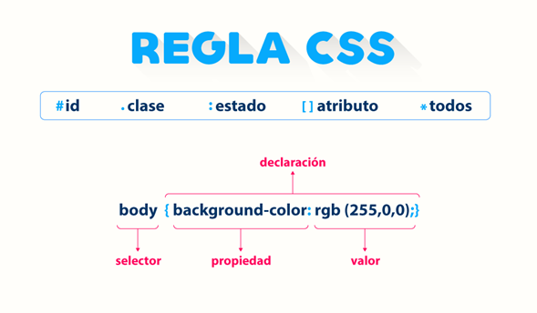

Practica No.4
Leccion No.2 - Conceptos básicos de HTML, XHTML y CSS
La estructura de la página web se basa en HTML
En si, los documentos HTML utilizan la extensión .htm o .html. Esta extensión avisa al navegador web o a un dispositivo como un teléfono móvil, que en este archivo hay contenido HTML y dicho contenido se restituye en la ventana del navegador o la pantalla del dispositivo siguiendo las reglas del lenguaje HTML.
Ademas que las etiquetas se utilizan para definir el contenido de una página HTML. Estas etiquetas quedan enmarcadas dentro de los símbolos "menor que" (<) y "mayor que" (>) y se ponen al principio y al final de un objeto o texto utilizado en la página HTML. Aquí vemos un ejemplo de como se coloca un título con textos en ellas. Las etiquetas no se muestran en pantalla, pero todos los navegadores saben que el texto entre las etiquetas es un título de primer nivel:
Cómo se representa el código HTML en el navegador
Este seria un ejemplo de como se veria la estructura del codigo html tanto en html y la parte que lee el navegador:
Elementos de la estructura y su funcion
- Doctype:Esta línea indica al navegador que debe interpretar todo el código que sigue de acuerdo con un conjunto de reglas específico.
- Elemento HTML:Este elemento contiene a los demás y le indica al navegador que contiene un documento HTML.
- Elemento HEAD:En esta sección aparece información sobre la página, pero no se muestra en la pantalla.
- Elemento TITLE:Cualquier contenido dentro de las etiquetas "title" se muestra en la parte superior del navegador. Es lo que se utiliza cuando un usuario marca una página como "favorito" en el navegador.
- Elemento BODY:Todo el contenido dentro del body se muestra en la ventana principal del navegador.
- Elemento HEADING 1:El primero de seis elementos de cabecera. El contenido dentro de un heading de nivel 1 se muestra en tipografías grandes y en negrita.
- Elemento IMAGE: Enlaza a un archivo de imagen y la muestra en pantalla.
- Elemento PARAGRPH:Por defecto, el navegador añade un salto antes y después de este elemento, que suele contener varias líneas de texto.
- Elemento STRONG:El texto dentro de él se muestra en negrita.
- Elemento ORDERED LIST: Abre una lista de elementos en forma de líneas numeradas por orden.
- Elemento LIST:Cada línea con esta etiqueta recibe automáticamente un número ordinal empezando por el 1.
Detalles de la sintaxis de XHTML
Las páginas escritas en XHTML se pueden ver también en los navegadores que muestran las páginas HTML actuales. Las etiquetas y atributos de XHTML y HTML siguen siendo las mismas, pero la sintaxis del código XHTML es más estricta.
Las diferencias más importantes entre XHTML y HTML son estas:
- En XHTML, todas las etiquetas deben escribirse en minúsculas.
- XHTML exige que todas las etiquetas de apertura lleven su correspondiente etiqueta de cierre, es decir, siempre debe existir una etiqueta al principio y otra al final de cualquier elemento, sea un título, párrafo, imagen u otro.
- XHTML exige que el anidamiento de etiquetas (su inclusión unas dentro de otras), siga unas reglas estrictas.
Doctype indica al navegador qué debe esperar
Al inicio de toda página web debe aparecer una declaración Doctype. La declaración de "tipo de documento" le aporta pistas al navegador sobre el tipo de información que se va a encontrar en la página. Puesto que las especificaciones de HTML y XHTML son distintas, el navegador sabe así qué lenguaje va a interpretar y representar.
El navegador restituye la página empezando por la primera línea y va avanzando de principio a fin, por lo que esta indicación en la primera línea de todas tiene pleno sentido. Cuando un navegador lee una declaración Doctype, espera que todo en la página sea conforme con el lenguaje indicado. Si la página es totalmente conforme con las especificaciones, se considera válida.
El W3C y la validación de la página

W3C es la abreviatura con la que se conoce al World Wide Web Consortium una organización sin ánimo de lucro cuyo objetivo consiste en orientar la evolución de la Web. El W3C ofrece directrices y reglas para especificaciones como HTML y XHTML. Una forma de definir la validez del código HTML o XHTML que generamos es utilizar el servicio online de validación del W3C, que es gratuito
Otras ventajas del diseño basado en estándares
- Menos código: El uso de HTML y CSS nos permite crear páginas similares con menos líneas de código.
- Mantenimento mas sencillo Tener menos código supone un mantenimiento más sencillo, y esto beneficia tanto al que escribe el código como a cualquier otra persona que después deba encargarse de su mantenimiento y revisión.
- Accesibilidad: Los documentos creados de forma semántica, es decir, que utilizan la etiqueta HTML más adecuada a su función en cada momento, pueden facilitar la lectura y navegación a personas con discapacidad visual y los usuarios que los visitan encuentran la información más fácilmente.
- Optimización para motores de búsqueda: Las páginas web que incluyen secciones claras e identificadas de forma lógica, tanto a nivel de código como de contenidos, facilitan la labor a los motores de búsqueda a la hora de indexarlas y clasificarlas puesto que con un contenido organizado y bien identificado resulta más fácil evaluar el contexto temático y la relevancia de la información que ofrecen.
- Compatibilidad: Los sitios web que independizan la estructura con respecto al estilo se adaptan mucho más fácilmente a dispositivos móviles y formatos de pantalla variados. CSS nos permite aplicar hojas de estilo alternativas que optimizan la presentación en pantalla dependiendo del dispositivo utilizado.
Estructura HTML
Los elementos suelen presentarse contenidos unos dentro de otros. Por lo general tenemos que empezar por diseñar la estructura HTML de la página para después continuar con los estilos, aplicando CSS.
En este ejemplo podemos ver los elementos más básicos que nos vamos a encontrar en prácticamente toda página web:
El elemento body está anidado incluido dentro del elemento html. En términos de programación, body está colocado entre la etiqueta de apertura html y la de cierre html, y por eso decimos que las etiquetas anidadas son las que se encuentran entre otras etiquetas de apertura y cierre.
Ambos elementos, body y html, forman la estructura básica de toda página web. Cuando un navegador abre un documento HTML busca esta estructura. El contenido dentro de la etiqueta body es la parte visible de la página, ya que es lo que se muestra en la ventana del navegador.
En los documentos HTML parte del contenido se muestra en pantalla dentro de la ventana del navegador, pero hay otra parte del código que queda oculta. Algunos ejemplos de este código oculto son los scripts que sirven para añadir interactividad a la página, o también el código que ayuda a los buscadores a clasificar el documento, y los estilos que definen el aspecto de la página. Este código suele aparecer dentro del elemento head, el cual a su vez, está anidado dentro de las etiquetas html.
Insertar imágenes en HTML
Para colocar imágenes dentro de un documento HTML se utiliza la etiqueta img. Al igual que ocurre con la etiqueta a, la etiqueta de imagen por sí sola no hace nada. Depende del valor de los atributos que especifiquemos, que indican qué imagen se debe mostrar y cómo ha de hacerse.
El empleo de atributos opcionales
Muchos de los atributos opcionales se encuadran dentro de lo que se denomina "buenas prácticas". Las buenas prácticas son un concepto amplio, que se utiliza para describir la manera generalmente aceptada de hacer las cosas en el diseño y programación para la Web.
Hay, en general, razones de sentido común detrás de las buenas prácticas: por ejemplo, al indicar la altura y la anchura se crea un espacio (conocido como "placeholder") para la imagen, y permanece aún en el caso de que la imagen no se haya descargado, debido a la lentitud de la conexión. Si no se crea este placeholder con una anchura y altura prefijadas, el aspecto y distribución de los elementos en pantalla va cambiando a medida que se cargan las imágenes, lo que en ciertos casos impide al usuario poder leer los contenidos durante ese proceso.
El papel de CSS
CSS nos permite aplicar estilos de manera coherente a los distintos elementos de las páginas del sitio web, de modo que los títulos, listas y párrafos pueden verse igual en todas y cada una de las páginas. Los conceptos básicos son estos: el siguiente código es lo que conocemos como una regla de CSS:
Definir un estilo para los títulos
El estilo y las instrucciones de formato las aportan las "reglas" que el propio navegador aplica por diseño a los elementos h1 a la hora de presentarlos en pantalla. El tamaño, color y tipo de letra los resuelve el navegador ya que no dispone de otras instrucciones de formato. El navegador solo sabe que hay un elemento "heading 1" y lo muestra de la forma en que considera adecuado.
Por ejemplo, el tamaño por defecto es 16 pixeles, el color es el negro y la fuente, Times New Roman. La palabra “color” se denomina como una propiedad en la sintaxis CSS y la palabra “red” es el valor que le aplicamos a esa propiedad. Al par compuesto por una propiedad y un valor se le denomina declaración.
Notación hexadecimal de color
El color, tanto en HTML como CSS, se designa mediante un código de seis caracteres precedido por el signo de almohadilla. A esta notación se le llama código hexadecimal, y es el sistema que se utiliza para identificar y establecer el color de los elementos. Con esta notación podemos reproducir prácticamente cualquier color.
El código se divide en tres pares de dígitos, y cada uno de ellos representa el valor RGB del espectro. Por ejemplo, el color blanco se representa en notación RBG como R:255 G:255 B:255, y su equivalente en HTML en formato hexadecimal es #FFFFFF (siendo FF el equivalente hexadecimal del número 255 decimal, que se repite para los tres pares). Un programa de edición de imágenes como Photoshop nos permite elegir un color concreto de una paleta y obtener directamente su equivalente RGB, tanto decimal como hexadecimal, para insertarlo en una regla CSS.
La regla que acabamos de observar emplea lo que se conoce como "selector de tipo", puesto que se aplica a todas las apariciones del elemento tipo h1 en el documento. Los selectores de tipo asignan propiedades CSS a cualquier etiqueta HTML del documento. En este caso, a la etiqueta h1. Todas las apariciones de h1 se mostrarán en pantalla con el texto en el color asignado. Los selectores de tipo también se les suele denominar "selectores de etiqueta".
Los estilos de clase y el elemento "span"
Los selectores de etiqueta se utilizan con mucha frecuencia, pero solo se pueden aplicar a elementos HTML. Cuando lo que queremos es modificar el estilo de alguna cosa que no coincide exactamente con una etiqueta, por ejemplo, cambiar el color de una única palabra dentro de un párrafo, el selector de etiqueta no es una buena opción e incluso en algunas ocasiones resulta imposible de aplicar.
En este caso podemos utilizar el selector de clase, que es una regla CSS que se puede aplicar a cualquier elemento dentro de una página. Los selectores de clase tienen unas opciones de nomenclatura flexibles, pero es muy conveniente utilizar nombres que describan adecuadamente lo que hacen.

Tres maneras de utilizar estilos
Como se observó en temas anteriores los estilos estaban situados dentro de la sección de cabecera head de la página. Esta modalidad recibe el nombre de hoja de estilos interna. Además de hojas de estilo internas, también existen las hojas de estilos externas y los estilos aplicados directamente "inline".
Una hoja de estilo externa es un documento independiente con la extensión .css. Cuando utilizamos un archivo externo, los estilos se definen en él y en las páginas HTML tenemos que insertar un enlace a dicho archivo. Mientras que las hojas de estilo internas solo se aplican a la página donde residen, las hojas externas se pueden aplicar a múltiples documentos HTML.
Los estilos inline o directos son la tercera posibilidad, pero se utilizan mucho menos que las otras dos. En este caso, las reglas se declaran dentro de las propias etiquetas HTML.
Los estilos directos son herramientas potentes porque se superponen tanto a los estilos internos como a los externos, aunque solamente se aplican a una etiqueta cada vez. Por su propia naturaleza, resulta complicado reutilizarlos.
Mientras que los estilos inline son útiles para aplicaciones puntuales o cuando no podemos utilizar una hoja de estilos interna o externa. Uno de estos casos puede ser un correo electrónico en formato HTML.
Cuándo utilizar hojas de estilo internas y externas
En las hojas de estilo internas, las reglas CSS quedan escritas directamente dentro del documento utilizando la etiqueta style. La hoja de estilos queda ubicada dentro de la sección head del documento. En el caso de las hojas internas, las reglas CSS solo se aplican al documento en donde residen.
En las hojas externas las reglas CSS, como ya explicábamos anteriormente, se guardan en archivos independientes. Podemos asociar un mismo archivo .css a cualquier página HTML, y con ello nos ahorraremos mucho trabajo y ganamos en flexibilidad. Si definimos una regla para el elemento p en una hoja de estilo externa, todos los párrafos del sitio web quedan modificados de inmediato.
Creación de una hoja de estilos externa
Una página HTML no tiene por qué limitarse a utilizar solamente una hoja de estilos externa, y en muchos sitios web de grandes dimensiones, las definiciones de estilos suelen repartirse entre varios archivos, para facilitar su organización y mantenimiento. Podemos incluso utilizar hojas de estilos para funciones concretas, como imprimir una página o visualizar el contenido en dispositivos móviles. Se pueden diseñar hojas de estilo también para que nuestros sitios web sean compatibles con navegadores antiguos.

En qué consisten los estilos en cascada

Si surgiera algún conflicto en la definición de estilos entre las declaraciones inline, interna y/o externa, el estilo directo (inline) será el que prevalezca porque es el que más cerca se sitúa del código HTML.La hoja de estilo interna tiene precedencia sobre cualquier otra externa, y las definiciones utilizadas en hojas de estilo externas se utilizan solo si no entran en conflicto con las declaraciones internas o directas.
Uso de textos y tipos de letra en la web
Cuando especificamos el uso de una fuente (tipo de letra) concreta, esta fuente ha de estar instalada en el ordenador o el dispositivo del usuario donde se va a restituir la página. Si el ordenador o dispositivo no dispone de esa fuente, el navegador la sustituye por otra.
Puesto que es imposible saber qué fuentes están instaladas en los ordenadores de los usuarios, y debido a la capacidad que tienen los navegadores para sustituir unos tipos de letra por otros, es posible que los resultados obtenidos en ciertos equipos no se correspondan con el diseño que hemos previsto.
Una opción puede ser utilizar fuentes que sabemos que podemos encontrar en la mayoría de los ordenadores. Lo malo es que son muy pocas estas fuentes de las cuales podemos tener la certeza de que se encuentran en prácticamente todos los ordenadores del mundo.
Estas son las Fuentes que podemos utilizar con más confianza en la Web:
Tipos de letra de uso comun en la web
Esta es una lista pequeña de distintas fuentes que podemos usar para cambiarle es estilo al texto hacerlo mas presentable, aunque son pocas son fuentes muy reconocidas y de las mas usadas:
- Arial
- Verdana
- Georgia
- Times New Roman
- Courier
- Trebuchet
- Lucida
- Tahoma
- Impact
La lista es pequeña porque tiene en cuenta las plataformas Mac y Windows y suponemos además que aún acceden a la web muchos ordenadores antiguos. Estos equipos más antiguos tienen una lista de fuentes preinstaladas más reducida que los actuales, por lo que un diseñador tiene que tener esto en cuenta a la hora de seleccionar el tipo de letra que usará en sus páginas.
Pero tambien podemos mencionar mediante la siguiente imagenes otros tipos de fuentes que se pueden usar para darle una mejor presentacion a un trabajo como:
El prometedor futuro de las fuentes
La escasez de opciones a la hora de utilizar distintas fuentes en la web ha causado frustración entre los diseñadores Web durante muchos años. Este problema va aliviándose a medida que ciertas empresas han ido creando soluciones para que las páginas puedan verse en un navegador con los tipos de letra especificados por los creadores.
El panorama de las fuentes está cambiando, sin embargo, con la aparición de las llamadas "web fonts" y, en concreto, con la funcionalidad **@font-face** de CSS. Ahora es posible añadir una gran variedad de tipos de letra y tener la certeza de que nuestras páginas se podrán ver tal y como pretendemos.
Cambiar el tamaño del texto con CSS
Cuando utilizamos CSS para formatear textos para la web, disponemos de algunas opciones para establecer su tamaño y su grosor. La propiedad CSS que controla el tamaño del texto se llama font-size.
Podemos modificar el valor de la propiedad font-size de varias formas:
- Tamaño absoluto: Se trata de una serie de palabras clave que indican tamaños predefinidos de letra. Los tamaños nominados escalan de acuerdo con las preferencias del usuario con respecto a la letra. Los valores posibles xx-small, x-small, small, medium, large, x-large y xx-large..
- Longitud: Es un número seguido de un indicador del sistema de medida (cm, mm, in, pt, o pc) o bien un de unidades relativas (em, ex, o px).
- Porcentaje: Un entero seguido del signo de porcentaje (%). El valor es un tanto por ciento del tamaño de letra del objeto padre.
- Tamaño relativo: Una serie de palabras clave que se interpretan como relativas al tamaño de letra del objeto padre. Los valores posibles son larger y smaller.
La elección de la unidad de medida para el tamaño de la letra en una página web es importante y no es tan fácil como parece. La principal dificultad en este sentido tiene que ver con la resolución de la pantalla y las distintas maneras en que, a lo largo del tiempo, los navegadores han resuelto la presentación de los textos.
El texto en monitores pequeños a menudo tiene un aspecto distinto de como aparecen en monitores de gran formato; con un poco de previsión podemos resolver este problema, imaginando el efecto en cada caso. Además del problema de la resolución de pantalla, tenemos que considerar también la forma en que cada navegador resuelve la restitución de los textos.
Las medidas en pixels y puntos no son la mejor opción para el tamaño
"Points" es una unidad que normalmente su uso es una mala práctica y no se recomienda en el diseño de páginas Web. Los puntos son un sistema de medida pensado para la imprenta de papel que indican una unidad absoluta de medida que no tiene una equivalencia exacta en pantalla. Los pixels, por su parte, son la unidad de medida que se suele emplear en los gráficos por ordenador. Los tamaños y resoluciones de pantalla se expresan en pixels.
Uso de una combinación de porcentaje y medida "em"
Una forma de resolver el problema del cambio de tamaño de los textos que causa el uso de pixels consiste en aplicar otras unidades de medida. Aquí vamos a establecer un cambio de tamaño fiable combinando el porcentaje y la unidad "em". La unidad de medida llamada "em" es muy parecida a los pixels en el sentido de que está pensada para variar la escala. La diferencia principal es que los "ems" no dependen de la resolución del monitor, mientras que los pixels sí. Puede que al principio los ems no sean muy intuitivos, pero si aprendemos a utilizarlos, nos aportarán grandes ventajas en el futuro.

Una de las razones más importantes para utilizar em como unidad de medida es que se adapta en el caso de que un usuario altere el tamaño del texto de su navegador. Podemos simular este efecto si aumentamos el tamaño de la letra en el navegador.
El problema que nos plantea el cambio de tamaño del texto en los navegadores es algo más complicado, ya que algunos utilizan la función "zoom" que aumenta o reduce la escala de toda la página. Los navegadores que disponen de zoom pueden tener, además, una opción aparte para variar solo el tamaño de la letra.
Otra de las ventajas de utilizar ems tiene que ver con la relación de escala entre todos los elementos que utilizan esta unidad de medida
Preguntas
¿Que es un XML y para que sirve?
El XML es un acrónimo de Extensible Markup Language, es decir, que es un lenguaje de marcado que define un conjunto de reglas para la codificación de documentos. Para este lenguaje las bases de datos, los documentos de texto, las hojas de cálculo y las páginas web son algunos de los campos de aplicación que hacen que este lenguaje sea de tanta utilidad y gran importancia hoy en dia en el campo tecnologico.
Estos son algunos usos o funcionalidades que se puede hacer en XML:
- Intercambio de datos entre sistemas, uno de los objetivos fundamentales de XML es permitir la posibilidad de intercambiar datos de forma estructurada entre diferentes sistemas.
- Base de datos, XML permite guardar datos de forma estandarizada para luego poder ser tratados por multitud de lenguajes diferentes.
¿Que caracteristicas tiene un documento HTML?
Estas son algunas de las caracteristicas principales y mas importantes de html, que hoy en dia tenemos muy presentes y utilizamos casi a diario en la creacion de paginas web:
Caracteristicas:
- Puede ser creado y editado con cualquier editor básico de textos.
- Es multiplataforma, o sea, puede ser visualizado por cualquier navegador de cualquier sistema operativo.
- No diferencia entre mayúsculas y minúsculas.
- Utiliza etiquetas o marcas, que consisten en breves instrucciones de comienzo y final, mediante las cuales se determina la forma en la que debe aparecer en su navegador el texto así como también las imágenes y demás elementos en la pantalla del ordenador.
- Cada elemento de un documento HTML consta de una etiqueta de comienzo, un bloque de texto y una etiqueta de fin.
- Es un lenguaje estático.
- Es utilizado para la creación de páginas web.
- Los documentos HTML son documentos de hipertexto que aparecen enlazando a otros documentos.
- Es un estándar reconocido por todo el mundo y cuyas normas define un organismo sin animo de lucro llamado World Wide Web Consortium, más conocido como W3C.
¿Que es y para que sirve un archivo XHTML?
XHTML en sus siglas que es Extensible Hypertext Markup Language a grandes rasgos, es un lenguaje de marcado que te permite editar webs y que
está basado en HTML 4.01, pero sus reglas son mucho más estrictas y versátiles que HTML.
Ademas que XHTML es una nueva formulación de HTML que utiliza el meta lenguaje de marcado XML, lo cual es una ventaja clave en su usabilidad
porque muchos formatos de datos están basados en XML y los dispositivos modernos requieren una versión estricta del lenguaje de
marcado porque no pueden mostrar mal el código fuente.
Pero el principal uso y lo que hace que XHTML sea un lenguaje tan utilizado y necesario hoy en dia es que se utiliza para marcar contenido como texto, imágenes y enlaces en forma de hipervínculos para crear una cierta estructura que puede ser mostrada por los navegadores, asi haciendolo un lenguaje escencial para cualqueir pagina web.
Conclusiones individuales
Emmanuel Enrique Larraga Bueno
En conclusion gracias a esta practica pude emplear y aprender nuevos conocimientos a partir de la investigacion de los leguajes HTML y XHTML en cuestion de sus etiquetas y como emplearlas dependiendo el tipo de operacion o aspecto que le quiera integrar a mi pagina web, tambien pude aprender mas sabiendo en que se diferencian estos 2 lenguajes, lo cual la principal diferencia que tienen estos 2 lenguajes es que XHTML se podria decir que es más "estricta", en el sentido de imponer restricciones en la forma de escribir etiquetas, atributos o valores, mientras que la sintaxis HTML es más "flexible", ya que cada lenguaje titnen sus propias librerias, etiquetas y tienen etiquetas parecidas pero que pueden variar o cambiar dependiendo que lenguaje estes usando. Ademas que tambien pude aprender mas acerca de las distintas fuentes, etiquetas, comandos que se podian emplear en xhtml y html, como el body, header, text, article, avalores, comandos, variables entre otras al ponero en practica con esta pagina web.
Alan Guillermo Ramos Zavala
Después de la practica logro entender un poco más sobre distintas cosas de CSS y HTML, de algunos ya tenía ciertos conocimientos como lo son algunas etiquetas que se definían y una cosa que me gustó mucho fue que el XHTML y el HTML son parecidos y ambos funcionan muy bien, pero lo que más me impresiono fue el cómo se miden los gráficos, imágenes, etc. Creía que la única forma de medida era pixeles, pero ya aprendí algunas otras. Otra cosa que no sabía era acerca de los tipos de fuentes en un programa, sabía que había pocas, pero no sabía cuáles y el por qué.
Adrian Fuentes Mendoza
Durante esta práctica se pudo observar y repasar la estructura HTML y la XHTML, principalmente en los elementos necesarios para cada uno y el orden correcto para su ejecución. Al ser elementos básicos fue por una parte más repaso sobre la colocación del HEAD, el BODY, y demás elementos, aparte de esto también se logró ver más a detalle sobre CSS. Para CSS se enseñó sobre la estructura para la declaración del diseño, así como las propiedades y valores que se pueden agregar, así mismo también las diferentes formas de aplicarlo, ya sea por clases por ID o globalmente por etiquetas. De igual forma la manera de poder agregar el CSS, ya sea de forma interna por medio de la etiqueta style, de forma externa por medio de la vinculación de un documento CSS y por último en línea junto con el HTML por medio de la propiedad style, además de poder observar dos principales formas de seleccionar los colores, como lo que sería mediante el hexadecimal o los valores RGB para la selección de estos. Por otra parte, también se hizo mención sobre los estilos de letra que se podían definir en el CSS, además de la propiedad para conseguir más estilos de letra de manera externa, así mismo como los tamaños que este puede tomar preterminadamente por valores, los cuales podrían variar tanto en pixeles, en porcentaje en tipo point y tipo em. Sin duda una práctica de gran apoyo para implementar a fondo todos estos conceptos básicos sobre las estructuras y diseños de las páginas web.
Isaias Jair Solano Peral
En el desarrollo de la practica 4 - Conceptos básicos de HTML, XHTML y CSS , pude conocer bases fundamentales de HTML5 , como su estructura , características de un documento HTML, inserciones de imagen, un poco de implementar CSS en HTML, detalles de Sintaxis de HTML , Definición de color, etc . Algo muy importante que pudimos conocer son los estándares actuales que se deben cumplir en la creación de una pagina web. Conceptos como XHTML y XML me parecían desconocidos pero ahora se para que son y para que se utilizan. La información me pareció bastante amplia pero relevante. Puedo concluir que es necesario aprender los conceptos básicos de HTML, XHTML y CSS para poder trabajar con estas tecnologías y poder tener una base de sus partes y características fundamentales.
Enrique Escobedo Adame
XML en su calidad de estándar del sector para expresar datos estructurados, ofrece muchas ventajas a las organizaciones, desarrolladores de software, sitios Web y usuarios finales. Dado que la mayoría de las aplicaciones empresariales implican la manipulación o la transferencia de datos y registros en las Bases de Datos, como pedidos de compra, facturas, información del cliente, citas, etc., XML va a revolucionar las posibilidades de los usuarios finales en Internet, permitiendo la implementación de un amplio abanico de aplicaciones empresariales.